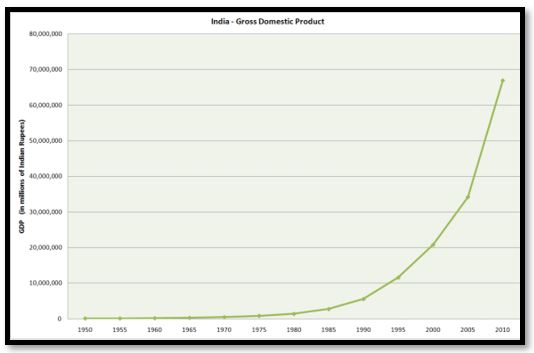
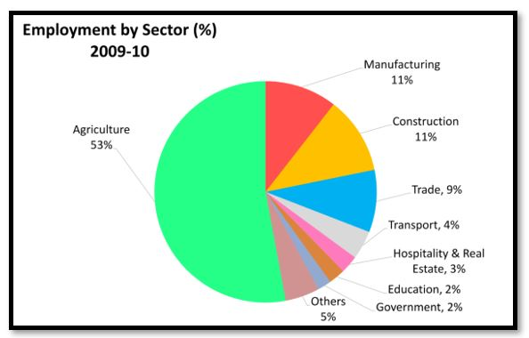
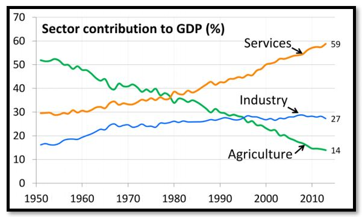
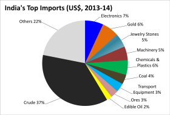

- Indian economy is described as developing market economy.
It is the world's sixth-largest economy by nominal GDP and the
third-largest by purchasing power parity.
- India has classified and tracked its economy and GDP in
three sectors: agriculture, industry, and services. Agriculture
includes crops, horticulture, milk and animal husbandry, aquaculture,
fishing, sericulture, aviculture, forestry, and related activities.
Industry includes various manufacturing sub-sectors.
- India's definition of services sector includes its construction,
retail, software, IT, communications, hospitality, infrastructure
operations, education, healthcare, banking and insurance, and many
other economic activities. If we consider GDP year by year then
doubling rate of economy is 5 years as shown below in fig.1

Fig 2: GDP grows exponentially, almost doubling every five years.
- Doubling rate of GDP means how well equipped that country is with
their production and consumption ratio. Production and consumption
rate always don’t depend on domestic demand, it also considers the
amount of import or export we do with the other countries.
- . Today’s world works under globalization and any country can’t
afford to close the economy as this will widely affect the growth.
If we go with the fact then Indian economy was closed before 1991
revolution and since then it achieved 3 trillion of economy.
- Like other economies of the world, Indian economy is also divided
in multiple sectors and that as whole contribute in GDP. Below chart
shows how each sector % wise contribute in economy. FYI: Indian economy
mostly dependent on agriculture and domestic sector.

Fig 3: Percent labor employment in India by economic sectors (2010)
- India has classified and tracked its economy and GDP in three sectors:
agriculture, industry, and services. Agriculture includes crops, horticulture,
milk and animal husbandry, aquaculture, fishing, sericulture, aviculture, forestry,
and related activities. Industry includes various manufacturing sub-sectors.
- India's definition of services sector includes its construction, retail, software,
IT, communications, hospitality, infrastructure operations, education, healthcare,
banking and insurance, and many other economic activities.

Fig 4 : Sector contribution in %
- Import as per definition means how much we bring in country from other.
Growth of any country is dependent on import-export factor. It is always
recommended to keep import as low as possible. This implies that country
is taking less from other resources meaning keeping fiscal deficit as
low as possible. Below chart shows India’s topmost import sectors.
Normally India imports crude as highest.

Fig 5: India’s top imports in dollars (2014)
- Exports as per definition means how much we sent outside by producing
domestically. As explained above export plays huge role in growth of any country.
More we export more we grow. It is connected with employment, market consumption,
production and fiscal deficit widely. Below is the chart for top export sectors in data.